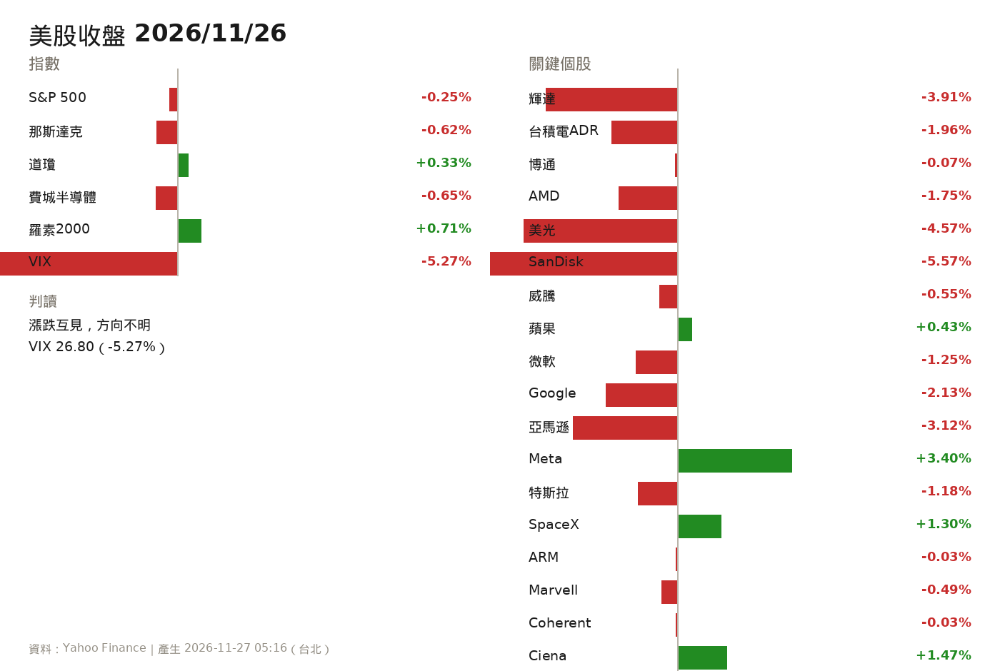
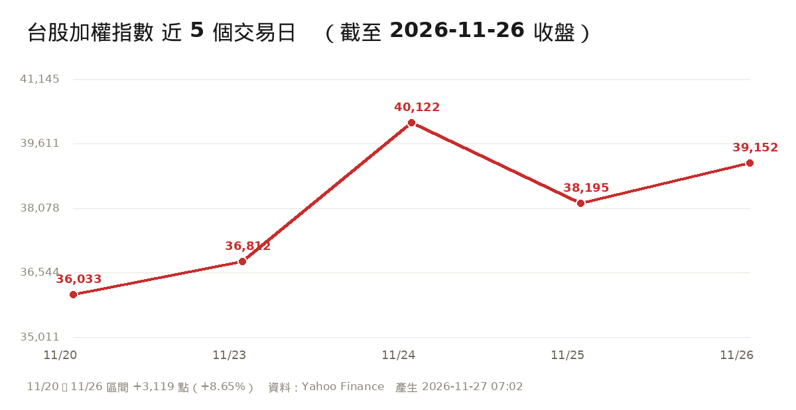
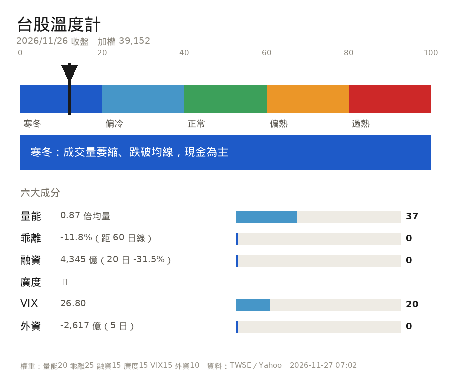
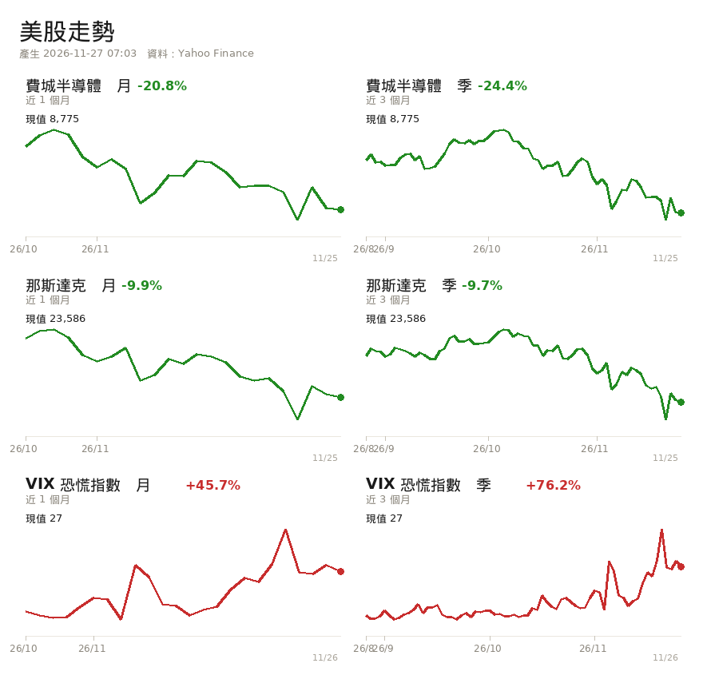
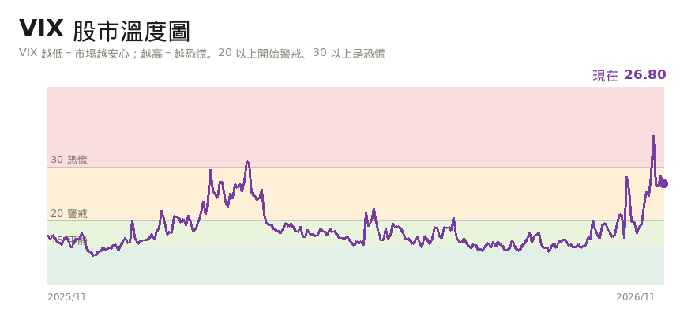
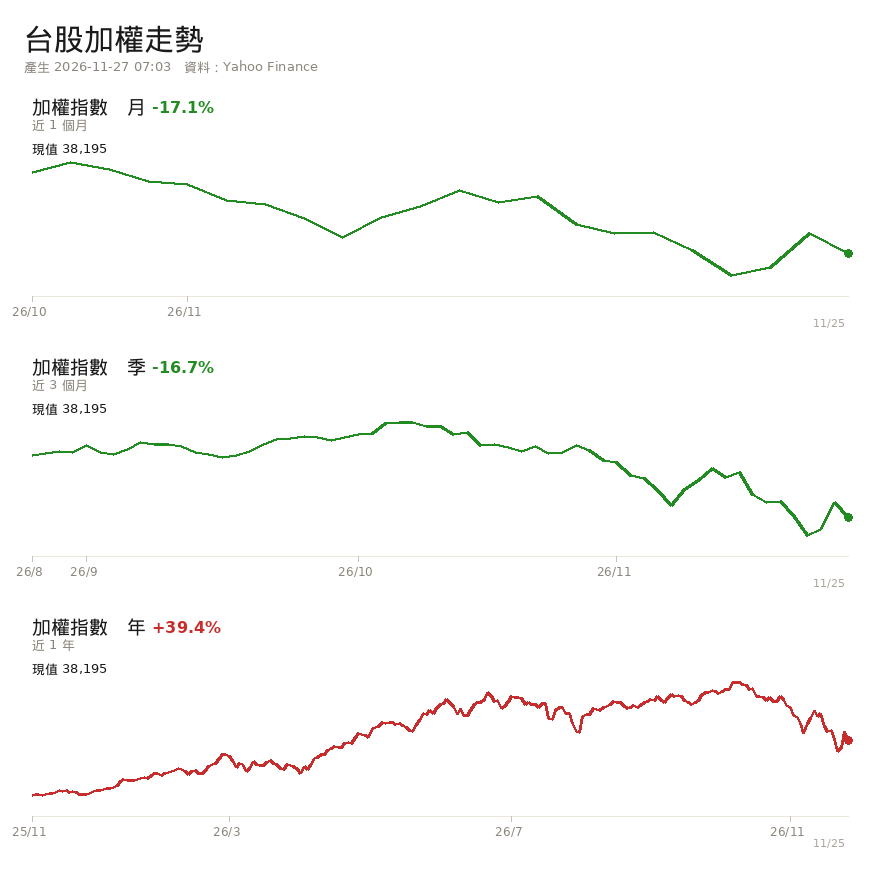

2026-11-27 投資日報2026-11-27 07:08
今日為台股交易日；美股 11/26 感恩節休市，11/27（五）為半日盤（美東 13:00 收盤＝台灣 11/28 凌晨 02:00）。
重點提醒｜Emmy（持續中）
來源：
財經頻道/Emmy追劇時間/Emmy重點提醒追蹤.md。未解除就會每天出現；判定解除當天標「過期」，隔天起不再列出。
- E1 輝達 NVDA／黃仁勳 真正風險不是技術洩密，是「走私晶片＋長期遊說晶片禁令」的國安問題。已持續 15 天。⬆️ 惡化：FT 11/26 報導輝達已要求戴爾、美超微暫停對馬、新、泰、印尼四國出貨 AI 伺服器（見 E12）；S&P Global 11/25 已列負面信用觀察。12/1 眾院閉門、12/2 法務長、12/3 參院公開作證。解除條件：12/1、12/3 國會程序結束且無新增出口管制或刑事程序。
- E2 台股／美股大盤 民主黨期中選舉大勝 → AI 資料中心與科技業監管收緊的恐慌，是 11/05-11/06 崩盤主因。已持續 19 天。➡️ 未變：BIS 132 頁新規仍生效、無新增也無轉鬆；新出現的是許可執行面（E12），屬貿易／出口管制線。解除條件：具體監管法案送進國會並過關，或政策明確轉向寬鬆。
- E3 台股／美股大盤 「熊市要來了嗎、該獲利了結嗎」——她事前提示了這一波下殺。已持續 26 天。⬇️ 緩解（未達解除）：11/26 加權 +956.38（+2.50%）收 39,151.81，收復 39,000；但仍在年線 39,551 之下、10 日線未站穩；外資賣超從 1,236.55 億縮到 491.8 億（連 9 賣），期貨空單反而創高。解除條件：指數站回季線且外資轉為連續買超。
- E4 油價／布蘭特原油 中東戰火推升油價 → 通膨壓力 → 股市下跌。已持續 29 天。➡️ 未變：布蘭特 91.73（11/27 03:29）、WTI 84.91，仍在 90 上方；OPEC+ 11/29 開會前無降溫證據。解除條件：布蘭特回落至 90 美元以下且中東衝突降溫。
- E5 記憶體族群／8299 群聯 大摩一次降 6 檔記憶體、目標價腰斬，群聯 2,588→1,357 降為「劣於大盤」。已持續 16 天。⬇️ 緩解（跌深反彈）：11/26 台股記憶體全面回溫——南亞科 +9.87%、華邦電 +9.52%、國巨* +9.87%；但美光 11/25 仍 -4.53%、SanDisk -5.57%，報價未轉強。解除條件：NAND 現貨報價重新轉強且外資對群聯轉為買超，或大摩回補評等。
- E7 AI 硬體成本／毛利率見頂 輝達 Q4 毛利率指引 71~72%，低於本季 74.8%；採購承諾大幅增加，成本往上游擠。已持續 9 天。➡️ 未變：毛利率指引不變；新增的 B300 租金下跌（7.72→7.19 美元/小時）是需求面訊號，不是成本面；採購承諾仍未以 10-Q 原文核對。解除條件：輝達毛利率回升至 74% 以上且採購承諾增速放緩，或記憶體現貨報價連續 2 個月回落。
- E8 跨資產同步下跌／流動性緊縮 股、油、金同一天一起跌，代表「保證金追繳、到處變現」，不是資金輪動。已持續 6 天。➡️ 未變（部分緩解）：黃金回升到 3,593.4（11/25 3,535.8）、布蘭特回落 3 美元；但 VIX 28.29 仍在 25 以上（11/26 美股休市無新值）、美 10 年殖利率 4.848% 未明顯回落。解除條件：VIX 回落至 25 以下、黃金與股市不再同步下跌、美 10 年殖利率止穩。
- E9 AI 晶片出口許可調查擴散（輝達＋超微） 調查戰線從「走私」擴大到「許可審查」與「會計揭露」；超微遭 Hunterbrook 做空報告狙擊。已持續 5 天。➡️ 未變（程序未結）：11/26 美股休市，AMD 無新報價；做空報告未被監管駁回、國會聽證未舉行。許可制已開始實際卡住伺服器出貨（E12），這條線反而在擴大。解除條件：國會聽證結束且無新一輪管制、超微與輝達不再創低，或做空報告被監管駁回。
- E10 政策／政治市：暴漲暴跌 這一波下跌與反彈都由「政治決定」驅動——川普 11/23 發文要求輝達回聘；台股靠國安基金＋限空令 3.0＋維持率降至 120% 拉抬。漲跌理由不在基本面，代表政策一轉彎就會反向。已持續 3 天。⬆️ 惡化：11/26 反彈靠的是 301 稅率消息，不是政策護盤也不是基本面；同日外資台指期淨空單增至 106,275 口、創歷史新高（+566），外資現貨仍賣 491.8 億。護盤工具還在，但外資用期貨對沖，政策買盤失效的證據更明確。解除條件：政策工具退場後指數仍站穩季線 3 日，且外資連續買超 3 日。
- E11 301 關稅／台灣稅率 USTR 11/25 公布「工業產能過剩」301 調查結果：台灣協議稅率最高 15% 不疊加、中國最高 20%、共 14 國；川普另稱兩年後對進口晶片課 200%。已持續 1 天。➡️ 未變（提案階段）：11/26 市場把「15% 不疊加」解讀為不確定性解除，台股 +956 點；但稅率仍是提案，2027/1/25 公聽會才定案，備案最高 25%。利多已反映一天，成本尚未發生。解除條件：台美協議簽署且稅率定案不再加碼，或正式生效後 3 個月台廠接單與毛利未受影響。
- E12 AI 伺服器出貨／出口許可制（東南亞四國） 輝達要求戴爾、美超微暫停對馬來西亞、新加坡、泰國、印尼出貨搭載其晶片的 AI 伺服器；美方 11/19 生效的新規要求這五國（含巴西）先進晶片出口須先取得許可，區域雲端業者 90 天內（約 2027/2/17）要證明客戶不含受限實體。已持續 1 天。🆕 新增：已發生（公司行為），輝達／戴爾／美超微未回應。連帶證據：新加坡 Aolani 對字節跳動的算力案被抽掉約 5 億美元授信；B300 租金 7.72→7.19 美元/小時（-7%）；惠譽指亞太資料中心投資放慢。今晚美股半日盤是第一次定價。解除條件：輝達與代工夥伴恢復對四國出貨，或取得許可且台廠 11 月營收未見遞延（12/10 前公布）。
🚨 警報狀態
- 危機警報排程正常啟用：
危機警報 盤中每5分（09:00-13:55）、危機警報 影片檢查22:20、2454 跌破3830 提醒（盤中每 5 分）都在跑。今天 07:00 檢查時三支都 enabled。 - L3 當事項：2454 聯發科。你的條件「跌破 3,830 全出」在 11/25 觸發，11/26 09:01 已發過一次提醒，你還沒有回覆「已處理／不處理」（警報確認紀錄停在 11/25）。11/26 收 3,705，仍在條件價之下 125 元（-3.3%），今天開盤還是要處理這 4 股。
- 盤前跨市場預警 06:40：今天有跑，但美股 11/26 休市、前一交易日跌幅未達門檻（標普 -0.25%），系統判定「不需預警」，所以沒有產出檔案。這是正常行為，不是故障。
⓿ 先回答三個問題：消息面 vs 已發生
一、輝達停止對東南亞四國出貨，是「已發生」還是「傳聞」？
| 項目 | 狀態 | 說明 |
|---|---|---|
| 輝達要求戴爾、美超微暫停對馬、新、泰、印尼出貨 AI 伺服器 | 🟥 已發生（公司行為） | FT 11/26 引述 3 名知情人士；戴爾與美超微已通知當地買家「輝達不允許出貨」。三家公司都未回應媒體 |
| 美方 11/19 生效的出口許可新規（含巴西共 5 國） | 🟥 已發生 | 美國商務部臨時最終規則；區域雲端業者 90 天內（約 2027/2/17）要證明客戶不含受限實體 |
| 新加坡 Aolani 對字節跳動算力案被抽 5 億美元授信 | 🟧 單一來源 | 彭博／FT 轉述，Aolani 與字節跳動均未回應 |
| 台廠 11 月營收因此遞延 | ⏳ 還沒發生 | 11 月營收 12/10 前公布，這是第一個可驗證的證據 |
怎麼用：這是「公司真的做了」而不是「分析師擔心」，所以不能當成昨天的題材隔天就忘；但影響金額還沒進財報，現在只能先降槓桿、不要加碼，不用急著砍。
二、301 稅率 15% 不疊加，利多到底多大？
| 項目 | 狀態 | 說明 |
|---|---|---|
| USTR 公布 301 調查結果，台灣最高 15% 不疊加、共 14 國 | 🟥 已發生 | 11/25 公布，內容是「建議」稅率 |
| 半導體、汽車、鋼鐵等已受 232 約束的產品被排除 | 🟥 已發生（提案內容） | 對台積電最關鍵的一條，晨星 11/26 指出 |
| 稅率正式上路 | ⏳ 還沒發生 | 2027/1/25 公聽會後才定案，備案最高 25% |
| 台股因此大漲 956 點 | 🟥 已發生（市場反應） | 但外資同日仍賣 491.8 億，反應的是「不確定性解除」，不是「成本下降」 |
怎麼用：這是「利空鈍化」不是「利多實現」。過去看空台股的理由之一是關稅未知，現在未知變已知（15%），股市把折價補回來；但 2027 年真正開始課稅時，毛利率還是會受影響。
三、外資賣超是不是快結束了？
| 項目 | 狀態 | 說明 |
|---|---|---|
| 外資連 9 賣、累計賣超 4,708.43 億；今年賣超 3.41 兆 | 🟥 已發生 | TWSE／工商時報 11/27 |
| 外資台指期淨空單 106,275 口、創歷史新高 | 🟥 已發生 | 11/26 逆勢加空 566 口 |
| 外資賣超「快結束」，因為 MSCI 台股權重調升至 29.01% | 🟧 觀點（券商看法） | 永豐投顧黃柏棠的說法，屬推論；MSCI 權重是已發生，但「權重升＝賣壓結束」沒有因果證明 |
怎麼用：判斷外資回頭只有三個可驗證的燈號——①台幣不再貶破 33 ②台指期淨空單降到 10 萬口以下 ③現貨轉買超。今天 0/3（台幣 32.947 算站穩 33 內，但空單創新高、現貨仍賣），所以「反彈」還不能當「反轉」。
① 一句話結論
台股 11/26 靠 301 稅率消息反彈 956 點，但外資現貨還在賣、期貨空單創歷史新高，這是「跌深＋利空鈍化」的反彈，不是資金回頭的反轉；今天最重要的事不是買什麼，是把 2454 那 4 股的條件單執行完。
今天要守的紀律：市場溫度 12／100（寒冬） → 照紀律第五條，大盤跌破季線且外資連 3 日大賣，總持股要降到 3 成以下；寒冬（<20）再加一條「不要摸底」。
🎒 JNA-202 PRO 快取單肩包：目前最低 2,800（BigGo／飛比全新），目標 1,500，還差 1,300，未達標。
② 國際與美股
美股 11/26 感恩節休市，以下為最後交易日 11/25 收盤。11/27（五）為半日盤，美東 13:00 收盤（台灣 11/28 凌晨 02:00），流動性差。
| 指數 | 收盤 | 漲跌 | 漲跌% |
|---|---|---|---|
| 道瓊工業 | 50,182.95 | +164.25 | +0.33% |
| 標普 500 | 7,182.78 | -18.31 | -0.25% |
| 那斯達克 | 23,585.80 | -147.74 | -0.62% |
| 費城半導體 | 8,774.86 | -57.64 | -0.65%（盤中最低 -7.96%） |
| VIX 恐慌指數 | 28.29 | +1.93 | +7.32% |

關鍵個股（11/25 收盤，Yahoo Finance）
| 代碼 | 名稱 | 收盤 | 漲跌% | 一句判讀 |
|---|---|---|---|---|
| NVDA | 輝達 | 149.30 | -3.91% | 盤中一度 -9%，東南亞停出貨的消息還沒反映在股價上 |
| TSM | 台積電 ADR | 342.34 | -1.96% | 跌幅小於輝達，301 半導體豁免有撐 |
| AMD | 超微 | 406.03 | -1.75% | 跌勢收斂（前一日 -8.86%），做空報告壓力暫緩 |
| AVGO | 博通 | 300.86 | -0.07% | 幾乎平盤，ASIC 線相對抗跌 |
| QCOM | 高通 | 168.66 | +2.24% | 逆勢上漲，手機晶片需求沒更壞 |
| AMAT | 應用材料 | 311.18 | -3.89% | 設備股補跌，反映資本支出疑慮 |
| MU | 美光 | 601.25 | -4.53% | 記憶體連兩天下殺，是這波最弱的一群 |
| SNDK | SanDisk | 73.61 | -5.57% | 跌幅最重，NAND 報價疑慮未解 |
| UMC | 聯電 ADR | 13.19 | -1.57% | 成熟製程跟著走弱 |
| ASX | 日月光 ADR | 29.49 | +0.55% | 逆勢小漲，先進封測題材有撐 |
| CRWV | CoreWeave | 42.57 | -0.08% | 平盤，但 CDS 1,314 基點才是它的問題 |
| AAPL | 蘋果 | 355.58 | +0.43% | 小漲，防守型權值 |
| MSFT | 微軟 | 489.93 | -1.25% | 小幅走弱 |
| GOOGL | 273.10 | -2.13% | 跌較重 | |
| AMZN | 亞馬遜 | 244.43 | -3.12% | 資本支出疑慮直接打它 |
| META | Meta | 609.89 | +3.40% | 今天最強權值，資金從 AI 硬體轉軟體 |
| TSLA | 特斯拉 | 380.14 | -1.18% | 小跌 |
| SPCX | SpaceX | 127.44 | +1.30% | 馬斯克送股票＋FCC 核准 100 萬顆衛星，題材續熱（未達 ±5%，不算異常） |
| ARM | ARM | 161.51 | -0.03% | 平盤 |
| MRVL | Marvell | 130.93 | -0.49% | 小跌，與 AVGO 同步抗跌 → ASIC 線比 GPU 線穩 |
| COHR | Coherent | 196.19 | -0.03% | 平盤 |
| CIEN | Ciena | 242.79 | +1.47% | 光通訊唯一上漲，資料中心內部連線需求仍在 |
| LITE | Lumentum | 476.58 | -2.16% | 跌較重 |
| VRT | Vertiv | 173.37 | -0.26% | 平盤，機房散熱／電源沒再殺 |
上漲的部分（別只看跌）：Meta +3.40%、高通 +2.24%、Ciena +1.47%、SpaceX +1.30%、日月光 ADR +0.55%、蘋果 +0.43%。資金不是全面撤出，是從 AI 硬體（GPU／記憶體／設備）搬到軟體與防禦型權值——Meta 漲、輝達與美光跌，這個對照比指數漲跌更有意義。
今晚（11/27 半日盤）要看的三件事
- 輝達、戴爾（DELL）、美超微（SMCI）對「東南亞停出貨」的反應——這是消息第一次被定價。
- 半導體能不能止穩：費半 11/25 收 8,774，若再破 8,700，台股 2330 的 2,145 會守不住。
- 成交量：半日盤量一定萎縮，不要用今晚的量判斷趨勢。
跨市場
| 項目 | 數值 | 說明 |
|---|---|---|
| 美 10 年期殖利率 | 4.848% | 從 5.05% 回落，但仍在 4.8 以上，外資的美元成本沒明顯下降 |
| 美 5 年期殖利率 | 4.66% | 同步回落 |
| 美元指數 DXY | 103.75 | 幾乎持平（前值 103.67） |
| 布蘭特原油 | 91.73 | 從 94.61 回落約 3%，仍在 90 以上（E4 未解除） |
| WTI 原油 | 84.91 | 85 上下震盪 |
| 黃金 | 3,593.4 | 從 3,535.8 回升，避險需求還在（E8 未解除） |
| 美元／台幣 | 32.947 | 11/26 收盤升值 1.79 角，站回 33 以內 |
| VIX | 28.29 | 仍在 25 以上；11/26 休市無新值 |
上漲主因：11/25 美股是「先崩後收斂」——盤中費半一度 -7.96%、道瓊 -1,100 點，尾盤由 Meta、蘋果等非 AI 硬體權值拉回，道瓊翻紅。原因是 301 稅率對半導體豁免的解讀＋跌深買盤，不是基本面轉好。
③ 台股覆盤（11/26）
| 項目 | 數值 | 漲跌 |
|---|---|---|
| 加權指數 | 39,151.81 | +956.38（+2.50%） |
| 成交金額 | 8,175 億 | 較前一日 1.19 兆萎縮 |
| 盤中高／低 | 39,459.95 ／ 38,435.99 | 振幅 1,024 點 |
| 上漲／下跌家數（上市櫃） | 1,739 ／ 244 | — |
| 漲停家數 | 93 | — |
| 台指期（日盤） | 39,455 | +1,332（正價差 303.19 點） |
| 台指期夜盤（11/26 盤後） | 39,492 | 平盤（區間 39,008～39,559） |
| 台幣 | 32.947 | 升值 1.79 角 |

盤勢節奏：開高走高，盤中一度大漲 1,294 點觸及 39,459.95，終場收斂到 +956 點，留下帶上影線的紅 K。台積電逆勢收黑 2,145（-5 元），最後一盤搓合把指數從 39,262 摜到 39,152（一盤少 110 點、成交 411 億）——這是外資調節最直接的證據。
誰在買：投信 +212.1 億（ETF 申購的被動買盤）、自營 +128.7 億（終止連 8 賣）、散戶融資 +3 億。誰在賣：外資 -491.8 億，連 9 賣。
夜盤給今天的訊號：台指期夜盤收 39,492、對現貨正價差約 340 點，沒有再殺；但美股 11/26 休市，夜盤等於「沒有新指引下的獲利了結盤」，不能拿來當今天開盤方向的預測。
💰 三大法人與籌碼（2026-11-26）
| 法人 | 買賣超（億元） |
|---|---|
| 外資 | -491.8 |
| 投信 | +212.1 |
| 自營 | +128.7 |
| 合計 | -151.0 |
外資買超 TOP 10
| 代號 | 名稱 | 張數 |
|---|---|---|
| 3481 | 群創 | +24,423 |
| 2887 | 台新新光金 | +20,604 |
| 2882 | 國泰金 | +20,171 |
| 6770 | 力積電 | +16,395 |
| 2409 | 友達 | +15,027 |
| 2891 | 中信金 | +13,289 |
| 2603 | 長榮 | +13,007 |
| 2317 | 鴻海 | +12,691 |
| 2313 | 華通 | +12,316 |
| 5871 | 中租-KY | +11,485 |
外資賣超 TOP 10
| 代號 | 名稱 | 張數 |
|---|---|---|
| 1802 | 台玻 | -81,442 |
| 2890 | 永豐金 | -52,703 |
| 2886 | 兆豐金 | -46,479 |
| 2892 | 第一金 | -33,654 |
| 2303 | 聯電 | -21,904 |
| 2330 | 台積電 | -18,134 |
| 2412 | 中華電 | -14,540 |
| 1216 | 統一 | -8,934 |
| 2885 | 元大金 | -6,920 |
| 3711 | 日月光投控 | -6,782 |
投信買超 TOP 10
| 代號 | 名稱 | 張數 |
|---|---|---|
| 2890 | 永豐金 | +34,151 |
| 2886 | 兆豐金 | +30,606 |
| 2892 | 第一金 | +29,799 |
| 2412 | 中華電 | +20,673 |
| 2303 | 聯電 | +10,498 |
| 1216 | 統一 | +8,476 |
| 1303 | 南亞 | +5,181 |
| 3711 | 日月光投控 | +4,664 |
| 4938 | 和碩 | +3,784 |
| 1605 | 華新 | +3,547 |
投信賣超 TOP 10
| 代號 | 名稱 | 張數 |
|---|---|---|
| 2882 | 國泰金 | -19,517 |
| 2887 | 台新新光金 | -15,426 |
| 1802 | 台玻 | -14,441 |
| 2603 | 長榮 | -13,284 |
| 5871 | 中租-KY | -10,544 |
| 2891 | 中信金 | -9,961 |
| 2880 | 華南金 | -9,665 |
| 2313 | 華通 | -7,415 |
| 2027 | 大成鋼 | -7,142 |
| 5876 | 上海商銀 | -5,980 |
自營買超 TOP 5
| 代號 | 名稱 | 張數 |
|---|---|---|
| 1802 | 台玻 | +4,358 |
| 6770 | 力積電 | +3,255 |
| 2880 | 華南金 | +2,688 |
| 3481 | 群創 | +2,228 |
| 2409 | 友達 | +2,054 |
自營賣超 TOP 5
| 代號 | 名稱 | 張數 |
|---|---|---|
| 4904 | 遠傳 | -643 |
| 1101 | 台泥 | -446 |
| 3040 | 遠見 | -358 |
| 3532 | 台勝科 | -326 |
| 2890 | 永豐金 | -248 |
散戶槓桿（融資融券）
- 融資餘額 4,345 億（+3 億）
- 融券 173,621 張（+4,256 張）
政府股市政策（持續中）
-
2026-11-09 金管會 借券賣出上限 30% → 3%、融券保證金 90% → 130% 每日盤中借券賣出量由「前 30 日均量 30%」降至 3%；融券保證金成數由 90% 提高至 130%；並放寬補繳擔保品（零股、基金、海外股票可抵繳）。
-
2026-11-20 金管會 收盤跌逾 3.5% 個股，隔日禁止平盤下放空；借券上限 3% → 1% 針對當日跌幅超過 3.5% 的股票，次一交易日禁止平盤以下放空；借券賣出上限再降至 1%。
-
2026-11-24 金管會 融資維持率 130% → 120%，11/24 前追繳紀錄全部取消 11/24 起整戶擔保維持率門檻降至 120%；11/24 前因低於 130% 被追繳者，追繳通知取消、擔保品不處分。上次降至 120% 為 1998 年。
-
2026-11-21 國安基金 國安基金進場（新聞報導，未見正式公告逐字） 授權執行秘書視情況動用資金護盤。此項為媒體報導，官方公開資訊尚待確認，日報標示為「消息面」。
-
我的持股：兆豐金 2886 外資 -46,479 張、投信 +30,606 張（外資賣超第 3 名、投信買超第 2 名，典型土洋對作，股價 -2.92%）
資料來源：TWSE（三大法人 BFI82U／個股 T86／融資融券 MI_MARGN） 抓取 2026-11-27 07:02
④ 頻道影片重點（11/26 六台，影片觀點）
🔴 加碼／看多訊號
- 加權反彈 956 點、站回 39,000 一綺聊股 ⏱[01:10]：反彈主因是「301 稅率 15% 不疊加」的不確定性解除，不是外資回頭（
一綺聊股/2026-11-26）。 - 日月光投控（3711） 一綺聊股 ⏱[14:20]：花旗目標價 908 元，2027 年先進封測營收有機會翻倍，客戶是 GPU＋客製化 ASIC 多家 AI 客戶，不是只依賴輝達。
- 低軌衛星族群 一綺聊股 ⏱[11:05]：FCC 有條件通過 SpaceX 部署最多 100 萬顆「軌道運算衛星」，昇達科、華通、燿華、兆赫、啟碁齊攻漲停；但她自己補一句「100 萬顆是許可上限、時程到 2038 年，不是訂單」。
- 台積電 5,000 元算式 鈔錢部署（張錫）⏱[08:40]：今年 EPS 110~115、明年 150、後年 200（共識），200×25 倍＝5,000，現在 2,145 是甜甜價。他自己也說 150／200 是預估不是財報。
- 標普 500 高量下影線＝短線止穩 財女珍妮 ⏱[02:45]：兩根長黑棒後爆量長下影線，是籌碼換手訊號；但下一句就是「我不認為這是 V 型反轉」。
- 年線扣抵值仍上揚 宏爺講股 ⏱[05:30]：長期多頭架構還留著一口氣（技術面，不是基本面）。
🟢 危機／減碼訊號
- 外資止賣三盞綠燈今天 0/3 宏爺講股 ⏱[09:10]：①美 2 年期殖利率止升 ②台幣不破 33 且台指期淨空單降到 10 萬口以下 ③外資現貨轉買超。今天一盞都沒亮，他的結論是「三盞沒全開前，急漲一律以反彈視之」。
- 台積電是外資的提款機 一綺聊股 ⏱[06:40]：10/6 創新高以來外資只有 11/11 買超一天，11/26 再賣 1.8 萬張、股價收黑 2,145。
- CoreWeave CDS 1,314 基點、違約率推估 68% 宏爺講股 ⏱[16:20]：2027 年有 110 億美元到期，這是 AI 債市的第一個壓力點。
- 「不是 V 型反轉」 財女珍妮 ⏱[03:51]：市場擔心的是需求下滑與資本支出放緩；核心 PCE 3.3%、實質消費持平、信用利差擴大。
- 那斯達克 100 深 V 反彈，12 次有 11 次在 3 個交易日後再跌 宏爺講股 ⏱[12:50]（歷史統計，非保證）。
- 台玻 1802 隔日沖痕跡 一綺聊股 ⏱[09:30]：外資前一天買 2.4 萬張、11/26 倒 8.1 萬張，投信也站賣方。
- 301 只是提案 晨星 ⏱[04:30]：稅率 15% 是建議，2027/1/25 公聽會才定案；半導體等 232 已約束產品被排除才是關鍵細節。
💼 我的持股有沒有被提到
| 代碼 | 名稱 | 哪一台提到什麼 |
|---|---|---|
| 2330 | 台積電 | 一綺（外資提款機，避開）、晨星（301 豁免最關鍵）、鈔錢部署（5,000 元算式）、宏爺（非台積權值撐盤） |
| 2454 | 聯發科 | 鈔錢部署（今年 EPS 70、明年 150、後年 300，但「護城河沒有台積電深，還有高通」）→ 沒有任何人建議現在買 |
| 2886 | 兆豐金 | 晨星（-2.92%、外資大賣投信買＝ETF 被動買盤） |
| 0050 | 元大台灣50 | 財女珍妮（間接：買敢抱 3~5 年的指數型） |
| 其餘 7 檔 | — | 未點名 |
📊 情緒溫度計（逐字稿 grep 實算）
| 頻道 | 集數 | 危機詞 | 看多詞 | 判讀 |
|---|---|---|---|---|
| 一綺聊股 | 11/26 反彈要賣股票嗎 | 13 | 29 | 看多詞集中在「漲停」(13)，是描述盤面不是她的立場；立場偏「反彈要減碼」 |
| 宏爺講股 | 11/26 反彈逃命 | 17 | 22 | 危機詞「空單」4 次、「賣超」3 次；看多詞「反彈」14 次全在講「這是反彈不是反轉」 |
| 晨星 | 11/26 台股反彈 956 點 | 10 | 19 | 「賣超」8 次，語氣最保守的一台 |
| 財女珍妮 | 11/26 落底訊號 | — | — | 英文 ASR，中文詞頻不適用；質性判讀＝中性偏保守 |
| 鈔錢部署 | 11/26 台積電照拚 5000 | 4 | 55 | 六台最看多（成長 26、甜甜價 5），但價值在算式不在結論 |
語氣判讀：六台裡 4 台（一綺、宏爺、晨星、財女珍妮）方向一致＝「反彈不是反轉」，只有鈔錢部署的張錫看多。這個 4:1 的分佈，比任何單一台的結論都值得參考。11/24 那天是「漲停」滿天飛（晨星 14 次），11/26 已明顯降溫（晨星 5 次）。
🔵 中長期展望（產業趨勢）
- AI 資本支出的資金來源正在被檢驗：輝達的需求端來自大型科技業與 OpenAI／Anthropic，但支撐支出的錢有相當比例來自債市（宏爺：CoreWeave CDS 1,314 基點）。這是 2027 年最可能出問題的一環——不是需求消失，是借不到錢。
- 出口許可制把「賣給誰」變成新的定價變數：從 11/19 新規到 11/26 東南亞停出貨，管制已從「晶片」擴大到「伺服器整機」與「算力租賃」。未來台廠的訂單能見度會跟著「客戶拿不拿得到許可」波動，而不是跟著終端需求。
- ASIC 與 GPU 的分流：11/25 輝達 -3.91%、博通 -0.07%、Marvell -0.49%，客製化晶片線明顯抗跌。若這個分歧持續，2027 年的赢家會是「不綁單一 GPU 平台」的供應鏈（日月光、ASIC 設計服務）。
- 定價權從外資轉向內資：外資今年賣超 3.41 兆、持股比重降到 47%，投信與 ETF 成為邊際買方。結果是波動變大、殖利率型 ETF（00713）相對抗跌——這對你的組合是結構性有利的一點。
- 太空資料中心從題材變成許可：FCC 核准 100 萬顆軌道運算衛星，代表「算力往太空放」這條線拿到法規門票；但時程到 2038 年，2030 年前不會有營收貢獻，現在只能當題材看。
📇 頻道摘要（六台最新一期）
11/26 這一輪已全部歸檔；今日凌晨無新集數，沿用 11/26 內容（日期保留）。
Emmy追劇時間 2026/11/17（EP.179）
名稱：黃仁勳下台 輝達震撼彈
內容
- 黃仁勳被逼宮下台。輝達的治理重度依賴黃仁勳個人決策，這是她認為最嚴重的地方。
- 但這波大跌不單純因為他的人事，真正原因是 BIS（美國商務部出口安全局）11/17 公布 132 頁新禁令：新加坡、馬來西亞、泰國、印尼、巴西也被列入管制。
- 過去中國 AI 公司走兩條路：走私伺服器（量少，買不到 10%）、或在親中國家蓋資料中心遠端算（量大）。新禁令把第二條路堵死。
- 對台股／台積電的傳導：先進晶片出貨地點被限縮 → 客戶拉貨節奏改變。
評論
- 她把「人事」和「政策」分開講，這點是對的：黃仁勳回不回來是消息面，BIS 132 頁是已發生。
- 真正該盯的是「資料中心蓋在哪」這條線，比「誰當 CEO」影響更長。
- 她自己的說法偏保守：沒說崩完了，只說這是結構性變化。
最近貼文（最新仍是 11/22 那則；11/27 抓取無新貼文）
- 「台股跌破四萬點一路向下…說好的逃生通道在哪裡？ AI 泡沫真的來了嗎？」（11/22）
- 另提 AMD 也爆 AI 晶片走私疑雲（眾院公開 BIS 許可：輝達＋超微 87.99 萬顆輸中；做空機構 Hunterbrook 指控，超微否認）
- 11/19 那則已被驗證：她原話「直接官復原職，他接下來就一定會做出更可怕的事情」→ 11/23 黃仁勳真的復職
- 貼文態度：她把這波定義為「已發生」，問的是出場窗口，不是抄底點
一綺聊股 2026/11/26（另補 11/25 直播）
名稱①：台股漲近千點！反彈要賣股票嗎？外資還在砍！低軌衛星華通、昇達科突然拉漲停（11/26） 名稱②：LIVE 快閃直播！夜盤又崩了兩千點？發生什麼事？（11/25 23:05，她在曼谷）
內容（①，11/26）
- 🔴 加權 +956.38 收 39,151.81（+2.5%），盤中最低 38,435、最高 39,459.95，成交 8,175 億
- 🔴 反彈主因是 301 關稅 15% 不疊加「不確定性解除」，她明講「不是外資回頭」
- 🔴 低軌衛星：FCC 核准 SpaceX 最多 100 萬顆軌道運算衛星；昇達科漲停 1,380、華通漲停 168
- 🔴 3711 日月光：花旗目標價 908（先進封測 2027 翻倍、客戶不只輝達），她自述這波有加碼
- 🟢 外資 -491.81 億、連 9 賣累計 4,708 億；台積電今天再賣 1.8 萬張（10/6 以來只買超一天）
- 🟢 台玻 1802：外資昨天買 2.4 萬張、今天倒 8.1 萬張；投信也賣
- 🟢 台光電漲停但大戶持股降到 3 個月低點
內容（②，11/25 直播）
- 崩盤當晚 23:05 開直播（人在曼谷）：跌 1,926 點、收 38,000 關卡，成交破 1 兆
- 「今天不用點名，跌停的就當點過了」；聯發科跌停，她自述「才剛開始獲利，現在又回到勉強打平」
- 跌因：川普關稅名單（仍在初步階段）＋台幣急貶＋外資 -1,236 億
- 她的核心句：外資不停手，投信、國安基金、官股買再多都沒用
評論
- 兩集合起來是「跌因＝關稅名單、漲因＝關稅解除」的完整對稱，同一件事在兩天內扮演利空與利多。
- 11/26 最有價值的是「外資把台積電當 ATM」這個資金流觀察，以及「反彈是消息面不是資金面」的定調。
- 警訊：字幕仍有英配回譯痕跡（數字全用證交所校正）；直播那支下載到英語配音音軌，逐字稿為英文。
最近貼文：無（該台以影片／直播為主）
宏爺講股 2026/11/26
名稱：反彈逃命？不能忽視這關鍵？台股融資蒸發 3 成、外資今年倒貨 3.2 兆！止血關鍵 3 訊號沒亮前別大意！
內容
- 🔴 長線年線扣抵值仍上揚，「長期多頭架構還留著一口氣」
- 🔴 301 台灣 10% 不疊加（優於日韓 12.5%），新案若加 5% 仍守 15% 內
- 🟢 外資止賣三部曲（三盞綠燈）：①美 2 年期殖利率止升 ②台幣不破 33＋台指期淨空單降回 10 萬口以下 ③外資現貨轉買超；今天 0/3 亮
- 🟢 融資自 10/6 蒸發 31.7%（6,000 多億→4,341 億），外資期貨淨空單 10.6 萬口
- 🟢 外資今年倒貨 3.2 兆、10 月單月 9,421.8 億（近 5 年新高）、占上市市值 47.1%
- 🟢 那斯達克 100 深 V 反彈「12 次有 11 次在 3 個交易日後再跌」
- 🟢 CoreWeave CDS 1,314 基點、違約率推估 68%、2027 年 110 億美元到期；集邦砍 2027 NAND 產值至 4,193 億美元
- 🟢 AI 鏈兩把照妖鏡：營業現金流／資本支出 > 1、盯公司債利差
評論
- 這是本月他最有框架的一集：不喊多空，給三個可每天打卡的燈號。
- 最實用的一句：「三盞綠燈沒全開前，大盤急漲一律以反彈視之」——今天 0/3 亮，與他的結論自洽。
- 漏掉的：S&P 把輝達 AA 列入 CreditWatch Negative（治理），這比 CDS 更直接影響發債成本。
- 口徑注意：他說「大盤殺到 35,442」是台指期夜盤，現貨最低 36,681.90。
最近貼文：無（以影片為主）
晨星 DayStar Brilliant 2026/11/26
名稱：台股反彈 956 點，外資還在賣！301 關稅多殺的補回來了，這波能撐多久？
內容
- 🔴 301 半導體、汽車、鋼鐵等已受 232 約束的產品被排除 → 對台積電最關鍵；但只是提案，2027/1/25 公聽會才定案
- 🔴 越南稅率最高 35%，台廠在越南有廠的壓力更大
- 🔴 台幣收 32.947、升 1.79 角，回到 33 以內
- 🔴 融資兩天 -203 億（4,535→4,341 億），11/13 以來上市 -1,000 多億、上櫃 -1/4
- 🟢 外資 -492 億（昨 -1,237 億）、投信 +231 億、自營 +129 億，三大合計 -133 億
- 🟢 台積電 2,145（-5），最後一盤搓合讓指數從 39,262 摜到 39,152（一盤少 110 點、成交 411 億）
- 🟢 兆豐金 -2.92%、永豐金 -2.2%，外資大賣、投信各買 3 萬張＝ETF 申購被動買盤
- 🟢 三個回穩條件：外資賣超遞減、台幣站穩 33 內、台積電止穩——今天只完成台幣一項
- 她主動更正昨天「美股感恩節休市」的說法（美股昨晚照常交易）
評論
- 六台裡立場最一致的一台：11/25 說「投信買超不是多頭訊號」，11/26 用兆豐金再次驗證。
- 最有價值的是「301 半導體豁免」這個細節，別台都沒講到。
- 「最後一盤摜 110 點」是外資調節的鐵證，比看均線更直接。
- 警訊：無字幕、ASR 數字全毀，筆記已全部用證交所複核。
最近貼文：無
鈔錢部署–華視優選 2026/11/26
名稱：外資遲早認錯？台積電照拚 5,000 仁勳之亂撿甜價 神山、發哥先搶誰？世芯-KY、奇鋐有搞頭（錄影 11/23、首播 11/26）
內容
- 來賓：張錫（東海大學客座教授、多頭總司令）、謝晨彥（股怪教授）
- 🔴 台積電：今年 EPS 110~115、明年 150（共識）、後年 200（共識）；後年 200×25 倍＝5,000 元，現在 2,145 是「甜甜價」
- 🔴 台股：今年上市公司獲利 +60%、明年 +25~30%；去年 29,000 → 今年合理 46,000、明年 58,000，明年 Q1 挑戰 5 萬
- 🔴 聯發科：今年 EPS 70、明年 150、後年 300 共識；但「護城河沒有台積電深，還有高通」
- 🟢 他自己的警語：「明年 150、後年 200 都是共識（預估），不是財報」
- 🟢 反方 SemiAnalysis 說 2028 晶片採購下修 3 成，他只用「它一直做空」帶過
- 🟢 第二段 00410A ETF 是業配：8/3 掛牌到 11/11 報酬 5.09%，樣本僅 3 個月
評論
- 六台裡最看多的一集（情緒詞 55:6），但價值在「算式」不在「結論」：EPS×本益比可以自己改參數。
- 真財報只有台積電 Q3（EPS 29.43、毛利率 66.4%、前三季 78.75），明年 150／後年 200 全是預估。
- 最大盲點：整集沒提 12 月升息機率 97%、10 年期美債 4.85%——他用「AI 剛需」解釋一切，但外資賣的是美元成本。
- 留言區有前會員控訴謝晨彥「親帶會員全數套牢」，已寫進筆記。
最近貼文：無
財女珍妮 2026/11/26
名稱：落底訊號出現了嗎？（英文講解，中文標題）
內容
- 🔴 前天低檔爆量＋兩根長黑棒後的長下影線＝籌碼換手、短線止穩，但「不代表反轉」
- 🔴 條件：標普今天整理不破低就是轉強；站上均線更好
- 🔴 儲蓄率回升到 4.1%、個人所得月增 0.7%，家庭開始修補資產負債表
- 🟢 「我不認為這是 V 型反轉」——市場擔心的是需求下滑與資本支出放緩
- 🟢 10 月 headline PCE 3.8%、核心 3.3%（高於預期）；「2% 現在完全不可能」
- 🟢 Q3 GDP 由 3.4% 上修 4.3%，但一部分是資料修正；名目消費 +0.3%、實質持平
- 🟢 信用利差擴大：即使殖利率下跌，非投等債籌資條件仍惡化
- 🟢 輝達 -3.9%、美光 -4.5%、ASML 也跌，「壓力正在擴散」
- 建議買「敢抱 3~5 年、基本面穩定」的公司（如標普 500 成分股）
評論
- 一天之內從「抄底」變「耐心等」：11/25 她說輝達 PE 10~11 倍很便宜，11/26 說不是 V 型反轉。
- 她的因果鏈（成本上升→毛利壓縮→EPS 下修）與宏爺的 CDS 觀察互相印證，是跨台交叉驗證的好例子。
- 她講錯一處：把 S&P 的信用評等（AA→CreditWatch Negative）說成「ESG 評級」。
- 限制：只轉錄前 13 分鐘（全片 27:56），後半段未涵蓋。
最近貼文：無
📺 一綺聊股最近一期（2026年11月26日）
2026年11月26日 台股漲近千點！反彈要賣股票嗎？外資還在砍！低軌衛星華通、昇達科突然拉漲停
🔗 筆記：財經頻道/一綺聊股/2026-11-26_台股漲近千點反彈要賣股票嗎/筆記.md
🟢 可以留意／建倉的標的
- 日月光投控（3711） 花旗給目標價 908 元，理由是 2027 年先進封測營收有機會翻倍，成長來自 GPU 與客製化 ASIC 多家 AI 客戶（不是只依賴輝達）
- 低軌衛星族群 FCC 有條件通過 SpaceX 部署最多 100 萬顆「軌道運算衛星」（太空資料中心），昇達科、華通、燿華、兆赫、啟碁齊攻漲停
- 華通（2313） 今天漲停 168 元，但她明確說「消息面居多」，且上方層層壓力（AI 圖表標 212.5）
- 穩懋（3105） 本土投顧給目標價 650 元，看好衛星通訊＋光通訊需求，EPS 年增近四成
🔵 中長期展望（產業趨勢）
- 長期（2027）：台灣在先進製程（2 奈米量產、亞利桑那 3 奈米）與先進封測的獨占地位沒變；但「外資持股 47%、今年倒貨 3.2 兆」說明定價權正在從外資轉向內資，這會讓台股波動變大、殖利率型 ETF 相對抗跌。
🔴 危機／要避開
- 避開 台積電（2330） 10/6 創新高以來外資只有 11/11 買超一天，今天再提款 1.8 萬張，股價收黑 2,145 元
- 避開 台玻（1802） 外資昨天才買超 2.4 萬張，今天直接倒 8.1 萬張、投信也站賣方，隔日沖主力痕跡明顯
- 大盤 外資連 9 個交易日賣超、累計提款 4,708 億，今天反彈外資照砍 491.81 億；三大法人合計仍是賣超
- 金融股 外資賣超第二名永豐金、兆豐金／第一金也在前五，土洋對作（投信買、外資賣）
- 反彈性質 她自己的定義是「短線反彈」，理由是反彈靠 301 關稅 15% 不疊加這條消息，不是外資回頭
📌 本集結論
- 今天是消息面反彈，不是資金面反轉：關稅不確定性解除→跌深股噴出，但外資連 9 賣、期貨空單創高，反彈的「買方」是投信、自營與散戶，不是外資。
- 台積電是這波外資提款機：10/6 以來只買超一天，今天再賣 1.8 萬張。指數能漲 956 點，是靠台達電、南亞、鴻海、台光電、日月光這些「非台積」權值股。
- 低軌衛星是「許可上限」不是「出貨訂單」：100 萬顆是 FCC 允許的最大值，時程排到 2038 年；短線漲停是題材，不是營收。
⑤ 我的持股動態（11 檔，11/26 收盤）
| 代碼 | 名稱 | 股數 | 現價 | 成本 | 損益 | 損益% | 當日 |
|---|---|---|---|---|---|---|---|
| 0050 | 元大台灣50 | 60 | 92.85 | 93.88 | -62 | -1.10% | +2.82% |
| 00713 | 元大台灣高息低波 | 200 | 60.00 | 46.58 | +2,684 | +28.81% | +1.69% |
| 1432 | 大魯閣 | 20 | 13.20 | 15.25 | -41 | -13.44% | +1.15% |
| 2002 | 中鋼 | 50 | 17.35 | 29.28 | -596 | -40.74% | +1.46% |
| 2454 | 聯發科 | 4 | 3,705.00 | 3,895.25 | -761 | -4.88% | +1.65% |
| 2634 | 漢翔 | 20 | 47.55 | 67.95 | -408 | -30.02% | +2.92% |
| 2886 | 兆豐金 | 311 | 48.25 | 25.50 | +7,075 | +89.22% | -2.92% |
| 3718 | 中光電投控 | 40 | 39.75 | 103.12 | -2,535 | -61.45% | +1.92% |
| 4160 | 訊聯基因 | 27 | 31.35 | 114.07 | -2,233 | -72.52% | 0.00% |
| 6469 | 大樹 | 11 | 51.00 | 待對帳 | +561（市值） | — | +0.20% |
| 8033 | 雷虎 | 20 | 113.00 | 202.25 | -1,785 | -44.13% | +6.10% |
- 總現值 54,737 元｜總成本 52,838 元｜總損益 +1,899 元（+3.59%）
- 扣掉兆豐金後：現值 39,731 元、成本 44,907 元、損益 -5,177 元（-11.53%）
- 意思很直接：整個組合靠兆豐金 +7,075 元在撐，其他 10 檔合計是賠 5,177 元。兆豐金 11/26 反而跌 2.92%（外資賣超第 3 名），這個「唯一獲利來源」正在被外資調節，要留意。
- 6469 大樹成本欄位是負值（-6.18），帳上資料有問題，我沒有猜，已標「待對帳」。
2454 特別提醒（L3）：現價 3,705、你的成本 3,895.25、「跌破 3,830 全出」已觸發 2 個交易日，11/26 09:01 已發提醒、尚未收到你的回覆。4 股 × 3,705＝14,820 元，續抱的理由必須是「有新催化劑」，不是「等回本」。
🎒 比價追蹤：JNA 包款（目標 1,500）
更新 11-27 07:03｜資料 BigGo／飛比。JNA-202 PRO 官方是「單肩包」。
| 品項 | 全新最低 | 福利品 | 二手 | 距目標 |
|---|---|---|---|---|
| JNA-202 PRO 快取單肩包 | 2,800 | 2,940 | — | 還差 1,300 |
未達標：目前最低仍高於 1,500 元，繼續追。
⑥ 觀察清單與法人動向
台股觀察清單（13 檔）
| 代碼 | 名稱 | 現價 | 漲跌 | 成交量 |
|---|---|---|---|---|
| 2330 | 台積電 | 2,145.0 | -0.23% | 42,164 張 |
| 2308 | 台達電 | 1,120.0 | +6.16% | 20,833 張 |
| 2454 | 聯發科 | 3,705.0 | +1.65% | 14,706 張 |
| 3443 | 創意 | 5,390.0 | +6.31% | 1,714 張 |
| 2383 | 台光電 | 3,660.0 | +9.09% | 8,455 張 |
| 2408 | 南亞科 | 306.0 | +9.87% | 40,548 張 |
| 3037 | 欣興 | 643.0 | +9.91% | 33,885 張 |
| 1802 | 台玻 | 59.7 | -0.33% | 399,608 張 |
| 1303 | 南亞 | 244.0 | +7.73% | 80,446 張 |
| 2327 | 國巨* | 339.5 | +9.87% | 26,175 張 |
| 2368 | 金像電 | 995.0 | +9.94% | 14,327 張 |
| 2344 | 華邦電 | 103.5 | +9.52% | 54,893 張 |
| 3661 | 世芯-KY | 3,735.0 | +3.61% | 3,266 張 |
外資動向（買賣超，單位：張）
| 代碼 | 名稱 | 今日 | 連續 | 近 5 日累計 | 近 10 日累計 |
|---|---|---|---|---|---|
| 2327 | 國巨* | +8,777 | 買超 2 天 | +16,272 | +22,199 |
| 2344 | 華邦電 | +10,797 | 買超 1 天 | +12,508 | +22,140 |
| 2408 | 南亞科 | +7,052 | 買超 1 天 | +9,580 | +13,388 |
| 3443 | 創意 | +308 | 買超 2 天 | +1,088 | +1,249 |
| 1802 | 台玻 | -81,442 | 賣超 1 天 | -96,517 | -200,075 |
| 2330 | 台積電 | -18,134 | 賣超 11 天 | -72,106 | -121,884 |
| 1303 | 南亞 | -3,327 | 賣超 4 天 | -15,511 | -70,457 |
| 2308 | 台達電 | -4,413 | 賣超 3 天 | -10,186 | -19,341 |
| 2454 | 聯發科 | -644 | 賣超 9 天 | -7,030 | -11,518 |
| 2368 | 金像電 | -2,669 | 賣超 3 天 | -4,796 | -5,177 |
| 2383 | 台光電 | -2,289 | 賣超 4 天 | -4,424 | -3,377 |
| 3037 | 欣興 | -1,556 | 賣超 1 天 | -1,785 | -8,533 |
| 3661 | 世芯-KY | -666 | 賣超 3 天 | -884 | -405 |
法人資料截止：2026-11-26（TWSE T86）｜報價時間 13:30:00
🧮 ETF 共識持股（跨發行商）
| 股票 | 名稱 | 持有 ETF 檔數 | 哪幾檔 | 合計權重 |
|---|---|---|---|---|
| NVDA | NVIDIA Corporation | 5 | QQQ、SMH、SOXX、VGT、XLK | 62.3% |
| AVGO | Broadcom Inc. | 5 | QQQ、SMH、SOXX、VGT、XLK | 26.3% |
| AMD | Advanced Micro Devices, In | 5 | QQQ、SMH、SOXX、VGT、XLK | 25.4% |
| MU | Micron Technology, Inc. | 5 | QQQ、SMH、SOXX、VGT、XLK | 21.8% |
| TXN | Texas Instruments Incorpor | 5 | QQQ、SMH、SOXX、VGT、XLK | 15.5% |
| INTC | Intel Corporation | 5 | QQQ、SMH、SOXX、VGT、XLK | 14.1% |
| AMAT | Applied Materials, Inc. | 5 | QQQ、SMH、SOXX、VGT、XLK | 12.2% |
| LRCX | Lam Research Corporation | 5 | QQQ、SMH、SOXX、VGT、XLK | 11.2% |
| ADI | Analog Devices, Inc. | 4 | SMH、SOXX、VGT、XLK | 11.6% |
| QCOM | QUALCOMM Incorporated | 4 | SMH、SOXX、VGT、XLK | 11.5% |
| KLAC | KLA Corporation | 4 | SMH、SOXX、VGT、XLK | 10.6% |
| MRVL | Marvell Technology, Inc. | 4 | SMH、SOXX、VGT、XLK | 8.0% |
12 檔符合 ≥4 檔 ETF 共識
🔄 本期換股（與上次相比）
- SOXX 新增：TSEM（含 SOXX 共 1 檔）
- QQQ 新增：GILD（含 QQQ 共 1 檔）
- QQQ 刪除：CRWD
⚠️ 這是「被動資金需求」的參考，不是買進建議。ETF 納入常發生在股價已漲之後，刪除則常在跌完之後。
⑦ SWOT
| 有利 | 不利 | |
|---|---|---|
| 內部（我的組合） | 兆豐金 +7,075 元撐住整體報酬；00713 +28.81% 抗跌，驗證「殖利率型 ETF 在內資主導盤勢較穩」；現金部位未動用 | 10 檔合計 -5,177 元（-11.53%）；3718 -61%、4160 -72% 兩檔合計已賠 4,768 元，占總虧損 9 成；2454 條件觸發未執行 |
| 外部（市場） | 301 稅率不確定性解除；台幣回到 33 內；融資從 6,000 億降到 4,345 億，浮額清洗過；MSCI 台股權重升至 29.01% | 外資連 9 賣、期貨空單 106,275 口創新高；輝達停止對東南亞出貨（E12）；12 月升息機率 97%、核心 PCE 3.3%；年線 39,551 未收回 |
一句話：我的優勢是「有現金、有抗跌的 ETF」，劣勢是「兩檔小型虧損股吃掉全部虧損、且決策拖延（2454）」。市場的機會是「利空鈍化」，威脅是「外資用期貨對沖，現貨賣壓還沒結束」。
⑧ 財經行事曆
今日已移除 1 筆過期事件（calendar_2026-11.json）。
- 11/27（五）美股半日交易：黑色星期五，美東 13:00 收盤（台灣 11/28 凌晨 02:00）。流動性差，不要在這天做重大決定。
- 11/29（日）OPEC+ 會議：油價（E4）能否回落 90 以下的關鍵。
- 11/30（一）MSCI 11 月調整生效（台股＋美股）：台股尾盤 13:00-13:30 被動單集中，台股權重調升至 29.01%；持股不要在尾盤被掃到才反應。
- 12/1（二）～12/3（四）輝達國會行程：12/1 眾院閉門、12/2 法務長、12/3 參院公開作證（E1）。
- 12/10（四）前：台股 11 月營收公布截止，是驗證 E12（東南亞停出貨）衝擊的第一個數字。
⑨ 紀律提醒（比對 ~/vault/交易紀律.md）
| 紀律條文 | 現在的狀況 | 衝突／該做什麼 |
|---|---|---|
| 跌破進場價 -7% 無條件賣出 | 1432 -13.44%、2002 -40.74%、2634 -30.02%、3718 -61.45%、4160 -72.52%、8033 -44.13%、2454 -4.88% | 7 檔違反。紀律沒有「套牢就改成長期投資」這條，這 7 檔早就該處理；至少要先寫下「為什麼續抱」的理由 |
| 單筆最大風險 2%、單一個股上限 20% | 2886 兆豐金占現值 27.4%（15,006/54,737） | 超過上限。但它同時是唯一獲利來源，賣掉＝實現 +7,075；這是一個要自己決定的取捨，我不替你決定 |
| 大盤跌破季線且外資連 3 日大賣 → 總持股降到 3 成以下 | 大盤 39,151 在季線下、外資連 9 賣 | 已成立但沒執行。這是今天最大的紀律缺口 |
| 不攤平虧損 | 11/26 反彈 956 點，跌深股漲停一堆 | 反彈最容易讓人想「攤平」；今天不做這件事 |
| 不追漲停 | 11/26 有 93 家漲停（南亞科、華邦電、欣興、金像電） | 不要因為昨天漲停就去追今天 |
| 達到 +15% 先賣一半 | 00713 +28.81%、2886 +89.22% | 兩檔都超過 +15%，紀律上「先賣一半」；但這是長期存股部位，要不要適用由你決定 |
與昨晚紅綠清單的衝突點：一綺聊股 🔴 看多「日月光 3711、低軌衛星」，但她自己同時說「反彈要賣股票、外資還在砍」；鈔錢部署喊台積電 5,000 元，晨星說「三個回穩條件只完成一個」。影片觀點彼此衝突時，紀律優先——紀律說現在是減碼環境，不是加碼環境。
⑩ 資料來源與限制
- 報價：本機
127.0.0.1:8787/api/quotes（TWSE），資料時間 2026-11-26 13:30 收盤；美股 Yahoo Finance（最後交易日 11/25）。 - 三大法人／融資融券／個股買賣超：TWSE BFI82U、T86、MI_MARGN，抓取 2026-11-27 07:02。
- 期貨／夜盤：台灣期交所盤後行情（經濟日報、民視 2026-11-27 06:20）。
- 新聞：工商時報 2026-11-27（外資 Q4 拋售、台指期強彈）、經濟日報 2026-11-26、FT／Reuters／彭博（輝達東南亞停出貨）、工商時報（MSCI 權重 29.01%）。
- 頻道觀點：
~/vault/財經頻道/11/26 六台筆記與逐字稿，全部標「影片觀點」。 - 消息面：
~/vault/財經頻道/消息面/fb_2026-11-27.json（8 則，5 則與股市相關），另見「消息面」頁籤。 - 限制：
- 美股 11/26 休市，②的個股與指數是 11/25 收盤，不是「昨夜」。
- VIX 28.29 是 11/25 值，11/26 無新報價。
- 盤前跨市場預警 06:40 判定未達門檻未產出檔案，因此本日沒有「🌙 盤前跨市場預警」段落。
- 台股 ETF 的發行人持股尚未接入，ETF 共識表目前只有美股 ETF。
- Emmy 最近貼文仍是 11/22，今日無新貼文；EP.180 仍卡會員 cookie（第 9 天）。
- 台股漲停家數 93 家取自經濟日報（上市櫃合計）；交易所「股票」口徑為 57 家，兩者統計範圍不同。
產生時間：2026-11-27 07:00（台北）
紀律
- 2454 聯發科先處理，再看盤：11/26 收 3,705，你的「跌破 3,830 全出」條件早在 11/25 就觸發，昨天沒處理，今天開盤第一件事就是決定賣或不賣，不是等反彈。
- 不追昨天的漲停：11/26 有 93 家漲停（南亞科、華邦電、欣興、金像電、台光電…），這些是跌深反彈的第一根，不是新趨勢的第一根。
- 反彈不加碼：外資連 9 賣、期貨淨空單 106,275 口創歷史新高，反彈的買方是投信、自營與散戶，不是外資。
- 今晚美股半日盤，不要在流動性差的時候做重大決定：11/27 美股 13:00（美東）收盤，台灣時間 11/28 凌晨 02:00。
- 不摸底：市場溫度 12／100（寒冬），紀律第五條是「大盤跌破季線且外資連 3 日大賣 → 總持股降到 3 成以下」，這條現在仍然成立。
走勢
市場溫度（警示燈）

台股溫度計：12／100（寒冬） 2026/11/26
- 量能：0.87 倍均量 → 37 分
- 乖離：-11.8%（距 60 日線） → 0 分
- 融資：4,345 億（20 日 -31.5%） → 0 分
- VIX：26.80 → 20 分
- 外資：-2,617 億（5 日） → 0 分
12 檔觀察清單（11/26 收盤）
| 代碼 | 名稱 | 現價 | 漲跌 |
|---|---|---|---|
| 2330 | 台積電 | 2,145.0 | -0.23% |
| 2308 | 台達電 | 1,120.0 | +6.16% |
| 2454 | 聯發科 | 3,705.0 | +1.65% |
| 3443 | 創意 | 5,390.0 | +6.31% |
| 2383 | 台光電 | 3,660.0 | +9.09% |
| 2408 | 南亞科 | 306.0 | +9.87% |
| 3037 | 欣興 | 643.0 | +9.91% |
| 1802 | 台玻 | 59.7 | -0.33% |
| 1303 | 南亞 | 244.0 | +7.73% |
| 2327 | 國巨* | 339.5 | +9.87% |
| 2368 | 金像電 | 995.0 | +9.94% |
| 2344 | 華邦電 | 103.5 | +9.52% |
| 3661 | 世芯-KY | 3,735.0 | +3.61% |
11/26 上市櫃漲停 93 家、上漲 1,739 家、下跌 244 家。
重點
美股（11/25 最後交易日，11/26 感恩節休市）
- 道瓊 50,182.95（+0.33%）翻紅；標普 7,182.78（-0.25%）；那斯達克 23,585.80（-0.62%）；費半 8,774.86（-0.65%，盤中 -7.96%）。
- 半導體仍是拖累：NVDA 149.30（-3.91%）、美光 601.25（-4.53%）、SanDisk 73.61（-5.57%）、應材 311.18（-3.89%）。
- 逆勢的：Meta 609.89（+3.40%）、高通 168.66（+2.24%）、Ciena 242.79（+1.47%）、SpaceX 127.44（+1.30%）。
- VIX 28.29，仍在 25 以上。
台股（11/26）
- 加權 39,151.81（+956.38、+2.50%），成交 8,175 億；盤中最高 39,459.95、最低 38,435.99（振幅 1,024 點）。
- 反彈主因是 301 稅率 15% 不疊加的消息，不是資金面。
- 台積電逆勢收黑 2,145（-5 元），指數是靠台達電、南亞、鴻海、台光電、日月光撐起來。
- 三大法人：外資 -491.8 億（連 9 賣）、投信 +212.1 億、自營 +128.7 億，合計 -151.0 億。
- 外資台指期淨空單 106,275 口，創歷史新高。
今天要記住的一句話
- 反彈看的是「有沒有量、外資有沒有回頭」，不是「漲了幾點」。昨天外資還在賣 491.8 億。
美股

上漲：Meta +3.40%、高通 +2.24%、Ciena +1.47%、SpaceX +1.30%、日月光ADR +0.55%、蘋果 +0.43% 下跌：SanDisk -5.57%、美光 -4.53%、輝達 -3.91%、應用材料 -3.89%、亞馬遜 -3.12%、Lumentum -2.16%


台股

- 加權 39,151.81，年線 39,551 還沒收回，季線更遠。
- 11/24 收 40,122.35 → 11/25 盤中低 36,681.90 → 11/26 收 39,151.81，三天振幅 3,441 點。
- 融資 4,345 億（+3 億）、融券 173,621 張（+4,256 張）。
⓿ AI 鏈健康分數（季等級，看財報不看新聞）

AI 鏈健康分數：40／100（轉弱） 季等級，從「付錢的人」開始看。
積木邏輯：加權 54 分，但底座最弱環節只有 0 分，總分上限壓到 40 分。
錢的源頭：四大 CSP 近 4 季營運現金流 1.12 倍於資本支出，自由現金流 +707 億美元；最近一季 -264 億（已開始透支）；淨現金（現金−負債）-4,423 億美元。
- 記憶體雙雄 +372%（YoY） → 很健康（100 分，權重 5%）
- 南亞科／華邦電月營收，記憶體循環的溫度計
- AI 晶片三雄 +79%（YoY） → 很健康（100 分，權重 10%）
- 輝達／博通／AMD 營收，代表 AI 伺服器與加速器的實際出貨
- 台積電月營收 +59.7%（YoY） → 很健康（100 分，權重 10%）
- AI 需求最直接的成績單，每月 10 日公布；由正轉負是第一個警訊
- CSP 資本支出 +114%（YoY） → 很健康（90 分，權重 10%）
- 訂單的源頭。年增率高＝硬體需求旺；但要看上面三項，錢是自己出還是借的
- AI 服務商現金流 -129 億美元 → 警訊（0 分，權重 10%）
- CoreWeave／Oracle 的自由現金流；負越大代表靠借錢擴張
- AI 服務商槓桿 淨負債 / TTM EBITDA 7.6 倍 → 警訊（15 分，權重 15%）
- CoreWeave／Oracle／Nebius 的槓桿是 CSP 的十倍以上（CRWV 12.4x、ORCL 4.3x、NBIS 20.7x）。底座垮了，上面的訂單會一起消失
- CSP 債務增速 +110%（一年） → 警訊（0 分，權重 15%）
- 總負債一年內從 279B 增加到 586B。借錢買機器最直接的證據，增速越快風險越高
- CSP 現金流支撐 4 季 OCF / capex 1.12 倍｜最近一季 -264 億 → 健康（65 分，權重 15%）
- 四大雲端業者自己賺的錢夠不夠付資本支出。近 4 季 OCF 6,670 億、資本支出 5,962 億 → 自由現金流 +707 億美元；低於 1 倍就要靠現金或舉債
- CSP 槓桿水位 淨負債 442B / EBITDA 691B = 0.64 倍 → 很健康（85 分，權重 10%）
- 資產負債表扛不扛得住。低於 1 倍＝獲利一年就能還清；3 倍以上＝景氣一反轉就吃緊
台股警示燈號（日等級）


每兩週更新一次，下次更新：2026-12-15。期間每日晨報都沿用本頁。
一眼看完
- 市場溫度 37／100（偏冷）
- 注意以上 6 項、危險 0 項 → 橙燈 減碼
- 動作：減碼到 3 成，只留核心持股
① 市場溫度（每個成分各自五燈）
- 量能 1.03 倍均量 → 53 分 正常 ｜ 成交量是最近 20 天平均的幾倍，錢多就熱
- 乖離 -2.9%（距 60 日線） → 35 分 安全 ｜ 指數離 60 天平均線多遠，漲太遠就是過熱
- 融資 5,366 億（20 日 -17.6%） → 0 分 很安全 ｜ 散戶借錢買股的餘額，增加＝追高、減少＝籌碼變乾淨
- 廣度 上漲 526 / 下跌 491 → 53 分 正常 ｜ 今天上漲家數對下跌家數，多數股票漲才是健康
- VIX 19.30 → 53 分 正常 ｜ 美國恐慌指數，越高越危險（反向計分）
- 外資 -968 億（5 日） → 18 分 很安全 ｜ 外資近 5 天買賣超，一直買＝偏熱、一直賣＝偏冷
② 退場訊號（每項獨立五燈）
藍＝很安全、綠＝安全、黃＝正常、橙＝注意、紅＝危險。
| 指標 | 什麼情況叫危險 | 現在 | 燈號 |
|---|---|---|---|
| 溫度計 | 80 分以上＝過熱 | 37 分 | 安全 |
| 融資水位 | 5,000 億以上＝危險 | 5,366 億 | 注意 |
| 融資變化 | 20 日 +15% 以上＝危險 | -17.6% | 很安全 |
| 外資現貨 | 5 日賣超 1,000 億以上＝危險 | 5 日 -968 億 | 注意 |
| 外資期貨 | 淨空單 10 萬口以上＝危險 | 99,573 口 | 注意 |
| 台幣匯率 | 一週貶逾 1 元＝危險 | 32.94（5 日 -0.17） | 安全 |
| 美 10 年殖利率 | 5% 以上＝危險 | 5.15%（5 日 +29bp） | 注意 |
| 量價結構 | 上漲量縮／下跌量增＝危險 | 上漲＋量縮（沒人接棒） | 注意 |
| 乖離 | 距 60 日線 +10% 以上＝危險 | -2.9%（距 60 日線） | 安全 |
| 景氣燈號 | 由紅燈轉黃紅燈以下＝危險 | 紅燈（41 分） | 注意 |
| 出口 | 年增率轉負＝危險 | +61%（2026-09） | 很安全 |
③ 基本面燈
- 出口：2026-10 出口 967.6 億美元（連 36 紅）。出口是領先指標，訂單旺→電子股營收後面會好。
- 景氣燈號：2026-09 41 分、紅燈（連 10 紅）。這是同時指標，確認現在很熱。
基本面是地板，不是天花板。 基本面最熱的時候，通常是股價最危險的時候。
④ 名詞解說（文字版）
市場溫度的六個成分
- 市場溫度：六項指標各打 0～100 分再加權平均 → 越高＝市場越熱，追高危險；越低＝越冷，但可能是機會
- 量能：今天成交金額 / 最近 20 天平均 → 高（1.5 倍以上）＝資金瘋狂、易過熱；低（0.7 倍以下）＝人氣退潮
- 乖離：指數離 60 天平均線還有多遠（%） → 高（+10% 以上）＝漲太遠易回檔；低（-10% 以下）＝跌太深易反彈
- 融資：散戶借錢買股票的餘額（億元） → 高＝槓桿多、一跌就斷頭；低＝籌碼乾淨、但也代表散戶跑光
- 廣度：上漲家數 /（上漲＋下跌）家數 → 高（80% 以上）＝全面上漲、偏過熱；低（20% 以下）＝全面恐慌
- VIX：美股恐慌指數（波動率） → 低（15 以下）＝平靜；高（30 以上）＝恐慌，通常在崩盤中
- 外資：外資近 5 個交易日買賣超金額 → 高（買超 1,500 億以上）＝熱錢湧入；低（賣超）＝資金外逃
退場訊號的 11 項
- 溫度計：市場溫度分數 → 80 分以上＝過熱，追高風險大
- 融資水位：全體融資餘額 → 5,000 億以上＝槓桿太高，一跌就斷頭
- 融資變化：融資餘額 20 日變化 → 20 日 +15% 以上＝散戶集體追高
- 外資現貨：外資在集中市場的買賣超 → 5 日賣超 1,000 億以上＝大錢在跑
- 外資期貨：外資台指期未平倉淨空單 → 10 萬口以上＝外資放空避險，看跌
- 台幣匯率：新台幣兌美元 → 一週貶逾 1 元＝資金外流（股匯雙殺）
- 美 10 年殖利率：美國 10 年期公債殖利率 → 5% 以上＝資金變貴，成長股受傷
- 量價結構：指數漲跌 與 成交量增減 的搭配 → 上漲量縮／下跌量增＝沒人接棒或有人在出貨
- 乖離：指數距離 60 日均線 → 距 60 日線 +10% 以上＝短線漲太急
- 景氣燈號：國發會景氣對策信號（9 項指標） → 紅燈＝景氣最熱，通常是股價高點區（落後訊號）
- 出口：海關出口金額年增率 → 由正轉負＝訂單真的轉弱（領先訊號）
更新規則
- 每兩週一次：每月 15 日與月底自動重算
- 出口（每月 8～9 日公布）與景氣燈號（每月底公布）手動更新到
~/.hermes/state/macro.json - 期間本頁固定不變，即時變化請看「走勢圖」頁籤

台股（1 項）
| 日期 | 類型 | 事件 | 為什麼重要 |
|---|---|---|---|
| 11/30 | 調整 | MSCI 台股生效 | MSCI 11 月調整收盤後生效，台股尾盤（13:00-13:30）會出現大量換股單，持股不要在尾盤被掃到才反應。 |
美股（2 項）
| 日期 | 類型 | 事件 | 為什麼重要 |
|---|---|---|---|
| 11/27 | 休市 | 半日交易 | 黑色星期五，美股提前於美東 13:00 收盤（台灣 11/28 凌晨 02:00）。流動性差，不要在這天做重大決定。 |
| 11/30 | 調整 | MSCI 美股生效 | 美股同樣在收盤時生效，被動基金最後一盤集中成交，個股尾盤波動放大。 |
下月預告（2026 年 12 月 財報與事件行事曆）
| 日期 | 類型 | 事件 | 為什麼重要 |
|---|---|---|---|
| 12/01 | 美股觀察 | 眾院約談黃仁勳 | 美國眾議院要求黃仁勳閉門受訪（美國當地日期）。這是國會「要求出席」的日期，不是確定行程，依最終安排為準；真的出席代表輝達治理問題進入政治程序，對 AI 監管預期是負面。 |
| 12/02 | 美股觀察 | 眾院約談法務長 | 眾議院要求輝達法務長閉門受訪。法務長被問的通常是出口管制與揭露義務，若傳出文件往來，後續可能有正式聽證。 |
| 12/03 | 美股觀察 | 參院黃仁勳作證 | 參議院要求黃仁勳公開作證（公開場合，殺傷力大於閉門）。公開作證的發言會直接影響 AI 晶片出口政策預期，台股 AI 鏈隔天通常連動。同樣以最終安排為準。 |
| 12/10 | 台股總經 | 11月營收公布 | 上市櫃 11 月營收公告截止。先看 2330、2454、8299 的月增率；營收是檢查基本面有沒有鬆動的第一個數字。 |
| 12/16 | 台股結算 | 台指期結算 | 12 月台指期契約結算日（每月第三個週三）。結算前後容易拉高或壓低，不要追價。 |
| 12/24 | 美股休市 | 平安夜半日 | 美股提前於美東 13:00 收盤（台灣 12/25 凌晨 02:00）。流動性差，不要在這天做重大決定。 |
| 12/25 | 美股休市 | 聖誕節休市 | 美股全天休市，台股正常交易。外資放假，台股由內資主導，量通常縮小。 |
每月固定要記的日子
- 每月 10 日前：上市櫃公布上月營收。2330、2454、8299 的月營收是我們檢查基本面有沒有壞掉的第一個數字。
- 每月第三個週三：台指期結算日。結算前後三天不要追價。
- 每月第一個週五（台灣時間晚上）：美國非農就業報告，公布上個月的就業數字。
- 每年 1、4、7、10 月：台股與美股財報季（台股 Q1～Q4 財報法定截止：5/15、8/14、11/14、3/31）。
- 每季一次：MSCI 季度調整（2、5、8、11 月），生效日多在月底收盤。
本頁每月月初更新一次，更新後沿用一整個月；資料核對於 2026-11-25。
這一頁是消息面，不是事實；粉專觀點正確性不保證，只當「別人在想什麼」的溫度計。
🟢 樂觀的一方怎麼說
| 論點 | 出處（粉專） | 我的查核 |
|---|---|---|
| 301 調查對台稅率最高 15% 且不疊加，半導體、汽車、鋼鐵等已受 232 約束的產品被排除，對台積電最關鍵 | 晨星 DayStar Brilliant（影片） | 已發生（提案）：USTR 11/25 公布結果；但稅率仍是提案，2027/1/25 公聽會才定案，備案最高 25% |
| 台積電後年 EPS 共識 200 元 × 25 倍＝5,000 元，現在 2,145 是「甜甜價」；明年台股合理 46,000、明年 Q1 挑戰 5 萬 | 鈔錢部署（張錫，影片） | 預估：明年 150、後年 200 都是共識值不是財報；本益比 25 倍是假設 |
| 外資今年賣超 3.41 兆不是「撤出台灣」，而是把超配部位調回中性，MSCI 台股權重反而調升到 29.01% | 工商時報引永豐投顧黃柏棠（11/27 報紙） | 已發生：MSCI 權重調整 11/30 收盤生效；「降回中性＝接近尾聲」是觀點，沒有量化證據 |
| FCC 有條件通過 SpaceX 部署最多 100 萬顆「軌道運算衛星」，太空資料中心是新的 AI 基建需求 | FinGuider／一綺聊股（11/26） | 已發生：FCC 11/27 核准；預估：100 萬顆是許可上限，時程排到 2038 年，不是訂單 |
| 老馬（馬斯克）說 SpaceX 潛力是全球經濟的百萬倍、建議大家不要賣 | IEObserve 國際經濟觀察（粉專） | 觀點：執行長對自家股票的評論，不是財務預測 |
🔴 危險的一方怎麼說
| 警訊 | 出處 | 為什麼危險（連到我的持股／大盤） |
|---|---|---|
| 輝達要求戴爾、美超微暫停對馬來西亞、新加坡、泰國、印尼出貨 AI 伺服器；新加坡 Aolani 對字節跳動的算力案，銀行抽掉約 5 億美元授信 | FinGuider（引 FT、彭博、路透） | 已發生（公司行為，輝達／戴爾／美超微未回應）。台灣 10 月對東協出口 184.6 億美元、年增 83.8%，這條線正是台灣伺服器／機櫃／散熱／滑軌的出貨動脈；今晚美股半日盤是市場第一次定價 |
| 外資台指期淨空單 10.6 萬口（106,275 口）再創歷史新高，11/26 反彈日還加空 566 口 | 工商時報（11/27） | 已發生（期交所數據）。代表外資把現貨賣壓換成期貨空單，反彈時照樣避險 → 指數上檔壓力不會因為一天反彈消失 |
| AI 估值的基礎不穩：支撐 AI 資本支出的錢來自債市、甚至是輝達自己，不是商業營收 | 東岸跪婦的大城小事（粉專，長文） | 觀點，但與宏爺引用的 CoreWeave CDS 1,314 基點方向一致。傳導路徑：租算力公司籌資成本↑ → 買卡放緩 → 台積電／伺服器鏈訂單遞延 |
| 韓股 -51%、費半 -44.5%、台股 -29%，三者相關係數高（本波自高點起算） | 齊克用-全方位財富管理（粉專） | 數據區間未註明，只能當「這波是全球同步去槓桿」的旁證，不能當精確數字引用 |
| 新規上路一週 B300 租金已從每顆每小時 7.72 美元跌到 7.19 美元（-7%），惠譽說亞太資料中心投資會放慢 | FinGuider（引彭博、惠譽） | 已發生：租金下跌＝算力供給鬆動的第一個價格訊號，比股價更早。若持續，AI 資本支出循環會見頂 |
❓ 我們可能還沒算到的（第二層）
- 11 月營收會是第一個傷口：東南亞伺服器 11/20 起停出，台廠 11 月營收（12/10 前公布）若出現「月減但年增」的機櫃／滑軌／散熱公司，代表訂單是遞延不是消失。若同時看到客戶拉貨放緩＋應收帳款天期變長，才是真的需求轉折。
- 90 天許可期限（約 2027/2/17）是一個日期風險：東南亞雲端業者若拿不到許可，當地新建機房停工 → 彭博統計資料中心貸款有 31% 來自東南亞銀行 → 違約風險會先在區域銀行而非科技股顯現，再回頭壓縮 AI 鏈估值。
- 新加坡帳目 1,040 億美元要怎麼認列：輝達 2025 年新加坡子公司入帳 1,040 億美元（年增 72%），其中一部分其實是台灣與中國客戶。若改成「按終端客戶總部所在地」揭露，分析師的區域模型要全部重算，這會讓「中國營收佔比」變成新的股價變數。
- MSCI 11/30 生效的尾盤效應：被動基金在 13:00-13:30 集中換股，我的 0050／00713 及權值股尾盤可能出現與基本面無關的跳動；那天不適合用尾盤價判斷趨勢。
- 12 月升息機率 97% 是「已定價」還是「未定價」：如果 12 月真的升息而台幣又貶破 33，外資的美元成本會再上升一階，這條線比財報更直接決定外資要不要回來。
📌 本週三個必盯
- 11/27（五）美股半日盤：台灣時間 11/28 凌晨 02:00 收盤，是輝達「東南亞停出貨」第一次被定價，看 NVDA、DELL、SMCI。
- 11/30（一）MSCI 11 月調整生效：台股尾盤 13:00-13:30 被動單集中，台股權重上調至 29.01%。
- 12/1～12/3 輝達國會行程：12/1 眾院閉門、12/2 法務長、12/3 參院公開作證，是出口管制是否再加碼的關鍵三天。
來源
- 齊克用-全方位財富管理 https://www.facebook.com/ckwm1
- 王志仁 John Wang https://www.facebook.com/john.wang.370417
- IEObserve 國際經濟觀察 https://www.facebook.com/intleconobserve
- 東岸跪婦的大城小事 https://www.facebook.com/GreaterNewYorkandOurLittleThings
- FinGuider 美股資訊網 https://www.facebook.com/FinGuider
- 工商時報 11/27（外資 Q4 狂拋售、台指期強彈逾千點）
- 未登入 Facebook，只取各粉專最新一則貼文（08:00 抓取，共 8 則，其中 5 則與股市相關）。